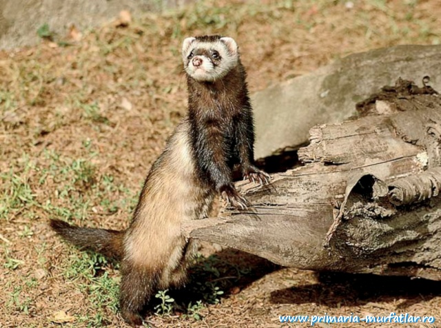
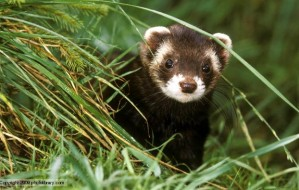
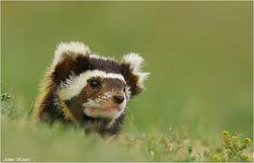

Durata de viata: Pana la 9 de ani
Unde traieste (mediu de viata): Munte ,campii
Dieta: Carnivor
Clasa: Mamifere
Nume stiintific: Mustela Putorius
Ce mananca (mancarea principala): Sobolani, iepuri, cartite, viermi
Predatori: Oamenii, vulpile, cainii, pisicile salbatice si domestice
Specie periclitata, pe lista rosie din Romania, dihorul-patat este protejat din 1993, insa se cunosc extrem de putine lucruri despre ecologia si statutul sau in tara noastra.
Romania este singura tara din UE unde mai traieste aceasta specie de rozatoare. Dihorul patat se gaseste in Dobrogea si in prezent specia sa numara aproximativ 500 de indivizi in Romania.
Curiozitati:
- Femelel au intre 29 si 35 cm lungime si cantaresc intre 300 si 600 grame. Masculii sunt mai mari si cantaresc intre 320 si 715 g.
- Sunt carnivori si le place sa vaneze mici rozatoare. Dar mai mananca si pasari, reptile, amfibieni, unele fructe si ierburi.
- Dihorul este o specie solitara. Asta inseamna ca ii place sa traieasca singur intr-un spatiu al sau care se numeste teritoriu.Este activ noaptea. Daca intalnesc un pericol, secreta un fluid foarte urat mirositorcu glandele anale.
- Dihorii sunt maturi din punct de vedere sexual la varsta de un an.Femela naste intre 4 si 8 pui. 
- O cauza a disparitiei dihorilor o reprezinta cultivarea pamanturilor,oamneii otravind dihorii pentru a-i alunga de pe teritoriul lor.
- Pe "Lista Rosie" sunt trecuti la categoria de risc scazut,dar unele populatii sunt foarte vulnerabile.
- In gradinile zoologice se pregateste un program de reproducere a speciei , pentru a o salva de la disparitie.
- Dihorul a fost imblanzit inca din timpuri stravechi, aproximativ acum 2500 ani, pentru vanatoarea de iepuri de camp.
- Dihorul european s-a desprins din dihorul de stepa acum 1,5 milioane de ani.Este Inrudit cu nurca cu care poate hibridiza.
- Dihorul are un corp subtire si flexibil, cu picioare scurte adaptate miscarii rapide in padure printre copaci, tufisuri si in vizuinele rozatoarelor si iepurilor cu care se hraneste. Capul este mic, lat si turtit cu urechi mici si rotunde. 
- Are auzul si vederea bine dezvoltate, dar mirosul este simtul sau cel mai dezvoltat. Dihorul traieste in salbaticie intre 8 si 10 ani, iar domesticit poate trai pana la 15 ani.
- Vanarea dihorului a fost candva sportul preferat al scotienilor. Vanatoarea se tinea noaptea, in miezul iernii. Cu toate acestea, majoritatea deceselor sunt cauzate de capcanele din otel puse pentru prinderea iepurilor.
- Blana dihorului european este pretioasa .Aceasta se foloseste in fabricarea de paltoane, jachete, gulere ?i caciuli. Din coada dihorului se pot realiza pensule. Un dezavantaj al blanii de dihor este mirosul care se inlatura cu mare greutate.